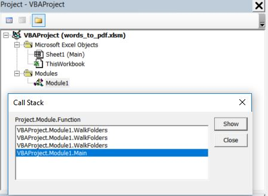

Recursion in System Files Management
Intro
Being tried of figuring theoretical examples out of recursion application,
I decided to go ahead and apply recursion for walking through folders and processing files as per need.
Recursion uses stack schema where each following function is being launched on the top of the previous one.
Closing functions goes the opposite way - from top to bottom.

Features
App includes following features:
Demo
In VBA IDE we can see the functions Call Stack - the very first on the bottom is the main one. Afterwards, we have got functions being launched subsequently on the top of each other.
As the sequence has the stack nature, the first function that ends its work up is at the very top. Another one that ends its work up is the second one that left on the top and so on till the mian function on the bottom.